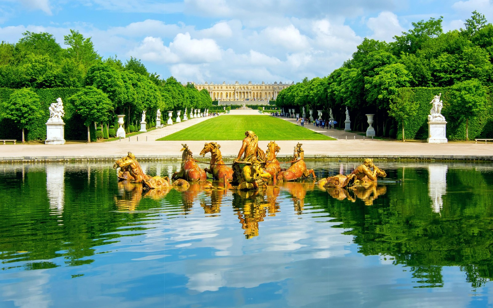
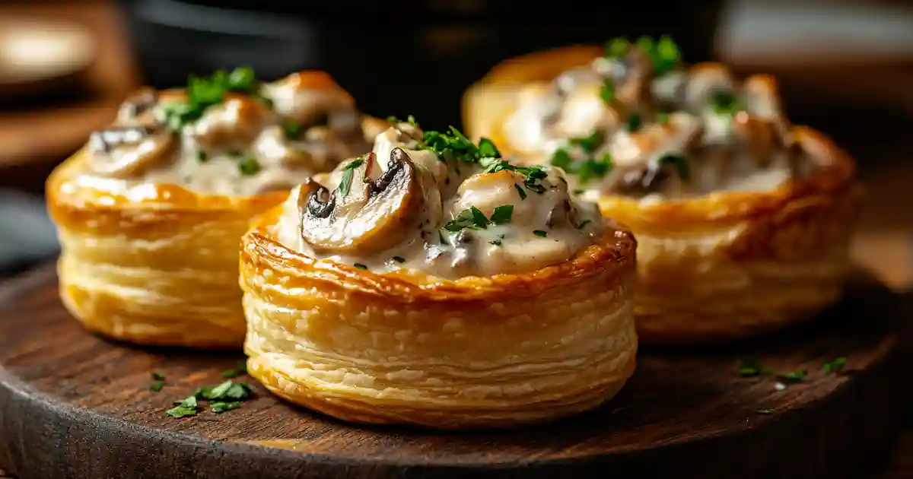
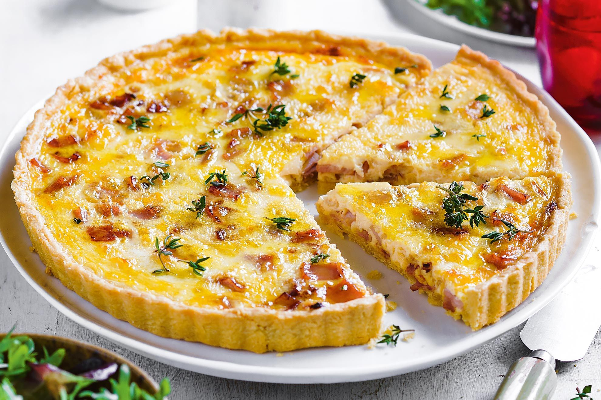
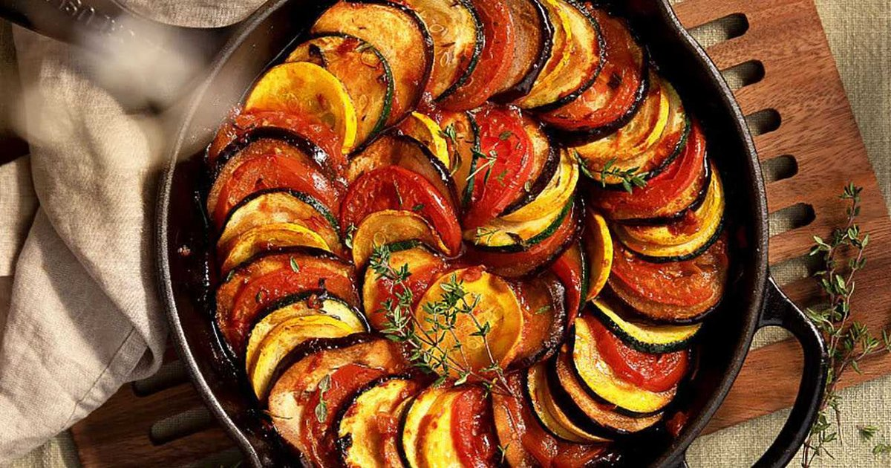
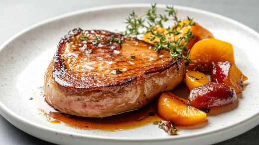

Versailles, located just 20 kilometers southwest of Paris, is home to one of the most magnificent royal palaces in the world. The Palace of Versailles served as the political center of France and the official residence of the French Kings from Louis XIV to Louis XVI. Built over decades in the 17th and 18th centuries, the palace and its spectacular formal gardens represent the pinnacle of French baroque architecture and grandeur. Today, recognized as a UNESCO World Heritage Site, Versailles draws millions of visitors who come to marvel at the Hall of Mirrors, the royal apartments, and the vast sculpted gardens that stretch beyond the horizon.

Bouchée à la Reine is a classic Versailles puff pastry dish with a hollow center. The center is usually filled with a creamy mixture of chicken, mushrooms, or veal in a rich sauce; variations may include ham or seafood. The pastry is lightly browned and flaky, providing a delicate shell for the savory filling.

Quiche Lorraine is a savory French tart made with a rich egg and cream custard baked in a pastry shell. Traditionally, it contains smoked bacon or lardons, with cheese sometimes added, creating a creamy and flavorful filling. The crust is golden and crisp, complementing the soft, savory interior.

Ratatouille is a traditional vegetable stew from France’s Provence region. It features layers of zucchini, eggplant, bell peppers, and tomatoes cooked with onions, garlic, and herbs. The vegetables are tender and aromatic, and the dish is often served hot or at room temperature as a flavorful side or main course.

Foie Gras is a French delicacy made from the liver of a specially fattened duck or goose. It is typically prepared as a smooth pâté or terrine, sometimes flavored with cognac or truffles. The taste is rich and buttery, with a delicate texture that melts in the mouth and pairs well with toasted bread or brioche.